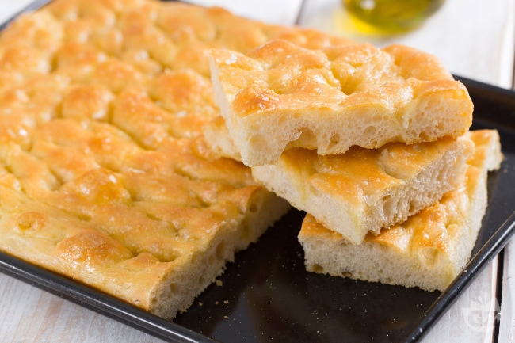

Focaccia with Caramelized Onions, Cranberries, and Brie
Wow your taste buds with this festive focaccia appetizer topped with sweet caramelized onions, tart cranberries, and creamy brie. It will become your new favorite holiday starter!
FEATURED IN:
Fresh Cranberry Recipes That Go Beyond Sauce
Ingredients
For the focaccia:
- 4 cups (500g) all-purpose flour
- 1 1/2 teaspoons instant yeast
- 1 1/2 teaspoons salt
- 1 3/4 cups (350g) lukewarm water
- 1/4 cup extra virgin olive oil, plus more for the pan
For the topping:
- 3 medium yellow onions, thinly sliced
- 1 tablespoon balsamic vinegar
- 1-2 tablespoons olive oil, for brushing on top
- 10 ounces brie, cut into cubes (scrape rind off with a paring knife if desired, though it's not
- 1 1/2 cups fresh or frozen cranberries
Method
-
Make the focaccia dough
In a medium-sized mixed bowl, or in a stand mixer with a paddle attachment, mix together all the dough ingredients until the flour is fully absorbed. You don't need to actually knead the dough, through I sometimes knead it a few times in the bowl when mixing by hand to incorporate the last of the flour...
Read more on Simply recipes